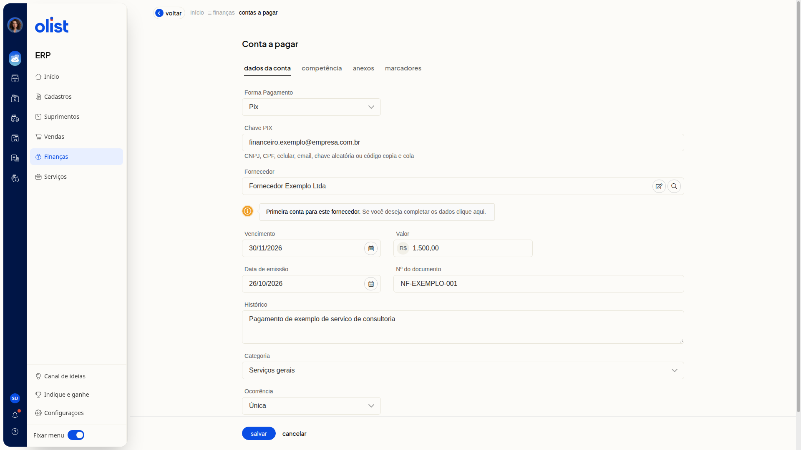

Como incluir uma conta a pagar manualmente
Descrição
A inclusão manual registra uma conta a pagar no ERP da Olist pelo formulário Conta a pagar. Você informa os dados da conta, a competência, os anexos e os marcadores do lançamento.
Acesse Finanças > Contas a pagar e clique em Incluir conta a pagar > Incluir manualmente.
Pré-requisitos
- Acesso à tela Contas a pagar no ERP.
Importante
- Os campos do formulário não são obrigatórios.
- O arquivo da aba Anexos não deve ultrapassar 2Mb.
- Se a Forma Pagamento for Pix, informe a Chave PIX.
- Voltar ou cancelar deixa a lista sem gravar.
Instruções
-
Acesse Finanças > Contas a pagar.
-
Clique em Incluir conta a pagar.
-
Clique em Incluir manualmente.
-
Preencha os campos em Dados da conta.

Dados da conta
- Forma Pagamento: escolha a forma. A tela exibe os campos dessa forma.
- Opções: Boleto, Cheque, Crediário, Cartão de crédito, Cartão de débito, Depósito, Depósito Bancário, Dinheiro, Duplicata Mercantil, Programa de fidelidade, Cashback, Crédito Virtual, Pix, Vale-troca, Vale Alimentação, Vale Combustível, Vale Presente, Vale Refeição, Transferência bancária, Carteira Digital e Outros.
- Chave PIX: preencha se a forma for Pix, com CNPJ, CPF, celular, email, chave aleatória ou código copia e cola.
- Fornecedor: informe o fornecedor. Se ainda não houver conta para ele, a tela avisa que é a primeira conta para esse fornecedor e oferece um link para os dados do fornecedor.
- Vencimento: informe a data.
- Valor: informe o valor em reais.
- Data de emissão: informe a data.
- Nº do documento: informe o número.
- Histórico: escreva um texto livre.
- Categoria: escolha uma categoria já cadastrada ou Adicionar nova categoria.
- Ocorrência: escolha Única, Semanal, Quinzenal, Mensal, Trimestral, Semestral, Anual ou Parcelada.
- Abra a aba Competência e informe o mês.
- Abra a aba Anexos e procure o arquivo. O tamanho não deve ultrapassar 2Mb.
- Abra a aba Marcadores e inclua os marcadores separados por vírgula ou pela tecla tab.
- Clique em Salvar para registrar a conta.
Links relacionados
Se precisar de ajuda para concluir o lançamento, fale com o suporte.